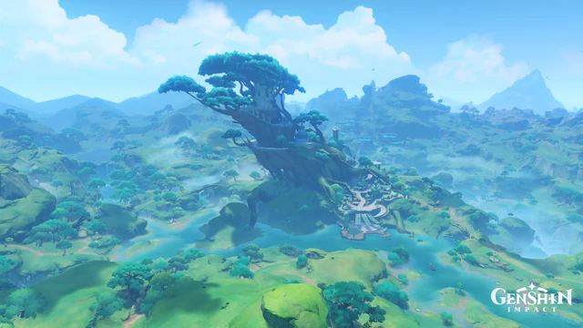

Sumeru · Geography & Locations
Sumeru: Knowledge and Memory
Sumeru joins rainforest and desert histories to a contested pursuit of knowledge, from Deshret and Rukkhadevata’s crisis to Nahida’s current role.

A Nation of Rainforest, Desert, and Scholarship
Sumeru spans the rainforest around the Akademiya and the Great Red Sand to the west. Its history is often narrated through the relationship between these landscapes, but neither is culturally uniform: the rainforest contains many communities beyond the city’s scholars, while desert people belong to distinct settlements, lineages, and groups.
The Akademiya became a powerful institution whose policies shaped public life. Under the sages, its treatment of Lesser Lord Kusanali and its use of the Akasha system gave scholars extraordinary control over knowledge and citizens’ dreams. The Archon Quest exposes that political arrangement as a specific period of abuse, not a timeless description of every Sumeru scholar or desert resident.
The Three Gods and the Forbidden-Knowledge Crisis
Older Sumeru accounts remember Greater Lord Rukkhadevata, King Deshret (Al-Ahmar), and Nabu Malikata, the Goddess of Flowers, as companions whose domains and peoples became closely linked. Their political history is not preserved in one neutral record: desert and Akademiya traditions remember it differently, and some motives remain uncertain.
After Nabu Malikata’s death, Deshret sought knowledge beyond the world and brought forbidden knowledge into his realm. Its corruption spread through Irminsul and devastated Sumeru. The records in King Deshret and the Three Magi show Deshret and Rukkhadevata cooperating against the disaster: Deshret chose to give his life, while Rukkhadevata used her power to contain the damage. This corrects the popular claim that Rukkhadevata betrayed him. The game associates the crisis with the Withering and Eleazar, but it should not be simplified into a single illness or a personal descent into madness.
Rukkhadevata’s later sacrifice to remove the forbidden knowledge from Irminsul also changed the world’s memories. Nahida erased Rukkhadevata from Irminsul at her predecessor’s request; people consequently remember Nahida as the Dendro Archon who had always been there. That alteration is a consequence of Irminsul’s memory rules, not proof that Rukkhadevata never existed.
Nahida, the Akasha, and Sumeru’s Institutions
The Akademiya’s sages imprisoned Nahida in the Sanctuary of Surasthana and prepared to install the artificial god Shouki no Kami. The Traveler and Sumeru’s allies helped free her, expose the sages’ scheme, and defeat the constructed god. Nahida then took authority over the Akasha and shut down its original network, which had run on the Dendro Gnosis and harvested users’ dreams without their knowledge.
Sumeru’s political transition did not erase its institutional inequalities or complete reconciliation between rainforest and desert overnight. The people can dream again, and Nahida’s approach places greater value on individual judgment and exchange, but the Akademiya and its scholars remain part of the nation. Later events also repurpose the Akasha infrastructure, so the terminals are not simply gone forever.
From Irminsul’s Burning to the Hallowing
The 6.6 Song of the Welkin Moon arc brings Sumeru back into the main story. Dottore’s surviving counterpart infiltrates Irminsul, and Nahida and her allies organize a response using the Pyro Gnosis, Aaru, and newly prepared Akasha Terminals. The operation overloads Irminsul; Nahida burns the corrupted tree, Dottore dies in the fire, and Aaru assumes Irminsul’s role. The Pyro Gnosis is no longer in Sumeru’s possession afterward, and its location remains unresolved.
In Version 7.2, the Hallowing activates the Nail of Retribution in Sumeru’s desert. Aaru decodes its signal as the word “dreams,” and Nahida sustains a dream trial that asks Sumeru to revisit its past choices. Cyno coordinates the nation’s response, while Tighnari brings news that King Deshret’s Eternal Oasis draws power from the Nail. After the trials, Nahida represents Sumeru in Celestia. The Hallowing is suspended, but the larger demand to reset Teyvat remains. These are current-story developments, not settled outcomes for Sumeru’s future.
This is an original CoreGG reading guide, not an official HoYoverse article or a reproduction of the game text. Source links below identify the records used so you can check the original context.
Sources & references
Check these sources for the original game text and reference trail.